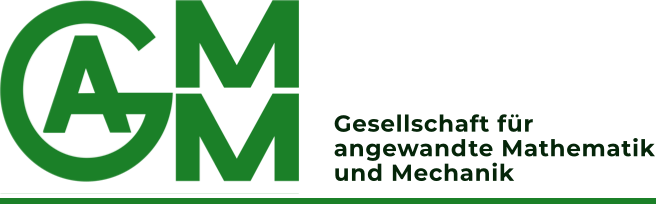
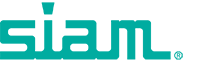

2026–
Postdoc-Fellowship
Fondation Sciences Mathématiques de Paris · Sorbonne Paris North University, France
Eigenes Projekt: Polarization dependent interface conditions for Maxwell’s equation.
Akademische Positionen, Ausbildung, Forschungsaufenthalte, Förderungen, Auszeichnungen, akademischer Service und Vorträge.
Fondation Sciences Mathématiques de Paris · Sorbonne Paris North University, France
Eigenes Projekt: Polarization dependent interface conditions for Maxwell’s equation.
Technical University of Dortmund, Germany · group of Prof. Dr. Ben Schweizer
University of Augsburg, Germany · group of Prof. Dr. Malte A. Peter
Thesis: Analytical homogenisation of transport processes in evolving porous media · Grade: summa cum laude.
Technical University of Munich, Germany
Thesis: Homogenization of Stokes Flow with Evolving Microstructure · Grade: with high distinction, with honours.
Teilnehmer des Elitestudienprogramms TopMath.
University of Augsburg, Germany
Thesis: Homogenisierung eines Reaktions-Diffusions-Problems mit veränderlicher Mikrostruktur.
Teilnehmer des Elitestudienprogramms TopMath.
Student research assistant (2017): group of Prof. Dr. Tobias Harks; development of algorithmic mechanisms for optimal allocation of resources.
Student tutor (2014–2016): tutorial classes in analytic geometry, algebra and numerical analysis.
SGL Carbon
Numerische Implementierung von Modellen für elastoplastische Deformationen.
Betreuung mathematikinteressierter Schülerinnen und Schüler zu weiterführenden Themen außerhalb des regulären Schulcurriculums.
Mathematik-Tutorien für Studierende der Ingenieurwissenschaften und Informatik im ersten Studienjahr.
Forschung zu Wasserwellen-Wechselwirkungen mit mehreren horizontalen dünnen elastischen oder poroelastischen Platten.
Teilnahme am Programm Mathematical theory and applications of multiple wave scattering.
Forschung zu Mehrskalen-Fluid-Festkörper-Wechselwirkungen.
Zweijährige Vollzeit-Forschungsstelle für das eigene Projekt Polarization dependent interface conditions for Maxwell’s equation.
Teilzeit-Forschungsstelle. Fördervolumen: ca. 35.000 EUR.
Project: Coupled advection-reaction-diffusion problems with evolving microstructure: analysis and homogenisation. Fördervolumen: ca. 52.000 EUR.

2025–2027 — GAMM Junior, Association of Applied Mathematics and Mechanics.
06/2023 — SIAM Travel Award, 800 USD.Das PDF enthält den vollständigen Original-Lebenslauf einschließlich persönlicher Kontaktdaten, die in dieser öffentlichen Web-Version nicht angezeigt werden.